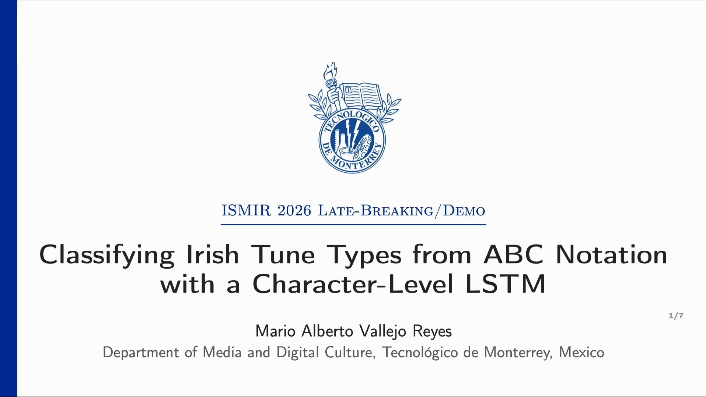
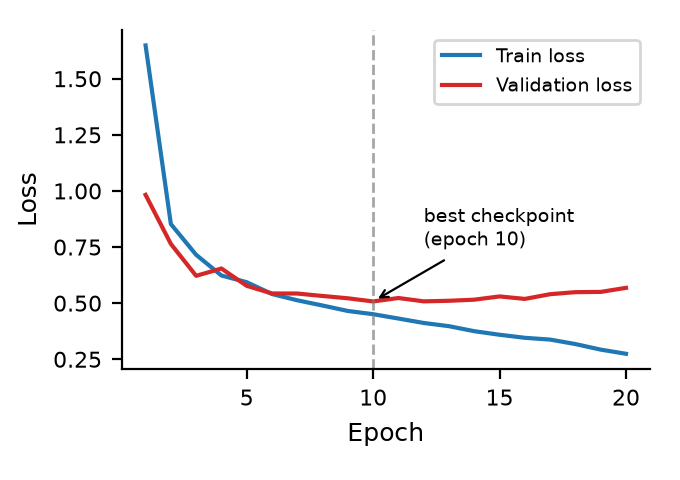

Classifying Irish Tune Types from ABC Notation with a Character-Level LSTM
Irish traditional tune types (reels, jigs, hornpipes, etc.) have been classified using hand-crafted symbolic features or audio embeddings of synthesized scores; neural sequence models trained on the same ABC-notation corpora have so far been used only for tune generation, not classification.
This work trains a character-level LSTM directly on raw ABC-notation transcriptions from The Session to classify tune type across twelve categories, and compares it against a support-vector-machine baseline built on music21-derived pitch, interval, and rhythm histograms, following prior symbolic-feature classifiers for this task. Both models are evaluated on a piece-level train/validation/test split to avoid leakage between settings of the same tune. Without class-weighted training, the LSTM reaches 83.9% test accuracy, exceeding the SVM baseline's 82.7%, but the SVM retains a higher macro-F1 (0.739 vs. 0.692), reflecting a trade-off between overall accuracy and balanced performance on metrically similar minority classes. A lightweight neural sequence model can match a hand-engineered baseline directly from text, without audio synthesis or manual feature design, while class imbalance remains an open challenge.
Keywords: Music Information Retrieval, Irish traditional music, LSTM, ABC notation, tune classification
ISMIR 2026 LBD submission
Download PDFISMIR 2026 LBD poster and presentation video
A0 landscape poster and a 5-minute walkthrough video, prepared for the ISMIR 2026 Late-Breaking/Demo session (virtual presentation).
Poster
Download poster (PDF, A0)
Video
Two pipelines on the same raw text
Because reels, jigs, and hornpipes are set apart mainly by meter and rhythmic feel rather than melodic content, a classifier for this task must learn rhythmic structure directly from the transcription. This motivates comparing a feature-engineered baseline against a model that reads the raw character sequence.
- ABC-notation tune (raw text), drawn from The Session
- Baseline branch: 60 hand-crafted features per tune extracted with music21 — pitch-class and melodic-interval histograms, melodic direction statistics, note-duration histograms, and meter
- Neural branch: character-level tokenizer, no feature extraction
- SVM (RBF kernel) on the baseline features / single-layer bidirectional LSTM (hidden size 128, 209,804 parameters) on the raw character sequence
- Tune-type prediction across 12 classes
Data
Tunes and their type labels are drawn from The Session (tunes.csv), yielding 55,352 settings across 23,300 unique tunes and 12 tune types, with substantial class imbalance (reel: 20,187; three-two: 428). Data are split 70/15/15 into train/validation/test at the tune level, not the setting level, so that no tune appears in more than one split.
Neural model
A single-layer bidirectional LSTM, implemented in PyTorch, is trained directly on the raw ABC character sequence (max length 600), with a linear classification head. Training uses AdamW with warmup and cosine decay, gradient clipping, dropout (0.3) and weight decay (10−4), and early stopping on validation loss (patience 10).

The LSTM wins on accuracy, the SVM on macro-F1
| Model | Accuracy | Macro-F1 |
|---|---|---|
| SVM (RBF) | 82.7% | 0.739 |
| LSTM (class-weighted) | 78.4% | 0.653 |
| LSTM (unweighted) | 83.9% | 0.692 |
Test-set results for the SVM baseline and the LSTM under class-weighted and unweighted training.
The unweighted LSTM's higher accuracy comes from strong performance on majority classes (reel F1 0.882, jig F1 0.966), while precision and recall collapse on tune types that share a meter with more frequent classes (barndance: precision 0.383, recall 0.303; march: precision 0.505, recall 0.302). This is not an arbitrary error pattern: reel, hornpipe, and barndance are all played in 4/4 and share a similar eighth-note pulse, whereas jig's distinct 6/8 compound feel gives the model an unambiguous rhythmic cue — the same reel/hornpipe-type confusion reported for SVM baselines in prior work. Class-weighted training raises minority-class recall but lowers overall accuracy, indicating that class imbalance, not architecture choice, is the main remaining obstacle for this task.
Class weighting, not regularization or augmentation, drives the trade-off
The ablation evaluates the contribution of class-weighted loss, regularization (dropout and weight decay), and symbolic transposition augmentation to the LSTM's performance.
| Class w. | Reg. | Aug. | Accuracy | Macro-F1 |
|---|---|---|---|---|
| ✓ | ✗ | ✗ | 77.5% | 0.650 |
| ✓ | ✗ | ✓ | 76.5% | 0.628 |
| ✓ | ✓ | ✗ | 78.4% | 0.653 |
| ✗ | ✓ | ✗ | 83.9% | 0.692 |
Ablation over the LSTM training recipe: class-weighted loss, regularization (dropout + weight decay), and transposition augmentation.
Augmentation lowers both accuracy and macro-F1 relative to the unaugmented model. Regularization alone leaves test performance almost unchanged while class weighting is on; only removing class weighting, on top of regularization, produces a substantial shift toward higher accuracy at the cost of macro-F1.
Reproduce the pipeline
Data preprocessing, the music21 feature extraction, the SVM baseline, the transposition augmentation, and the LSTM training script are released as Python code on GitHub. The raw dataset itself (tunes.csv) is not redistributed here — it is downloaded directly from The Session, in accordance with its data license.
Citation
@misc{vallejo2026irishtunes,
title = {Classifying Irish Tune Types from ABC Notation with
a Character-Level LSTM},
author = {Vallejo Reyes, Mario},
year = {2026}
}